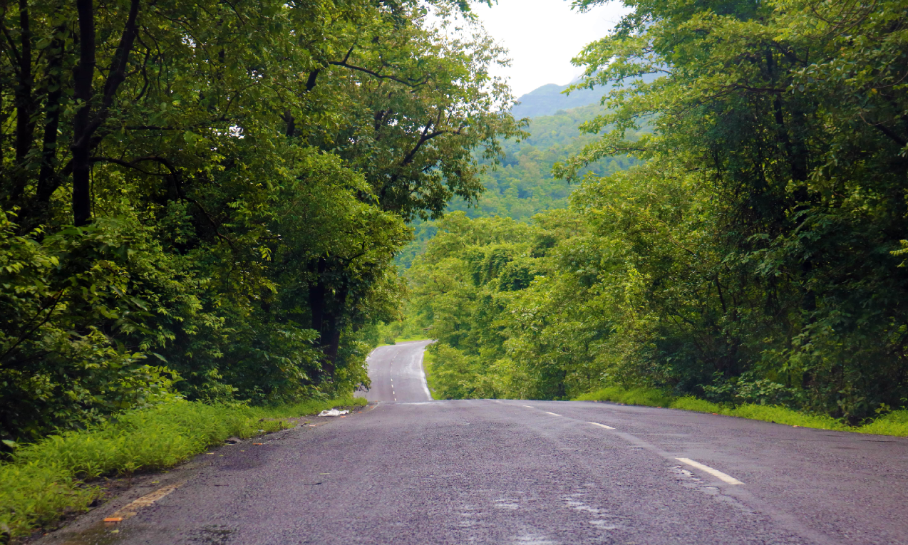
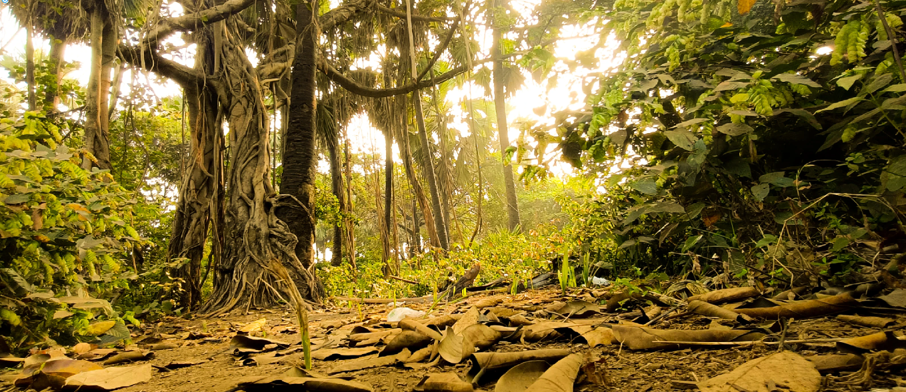
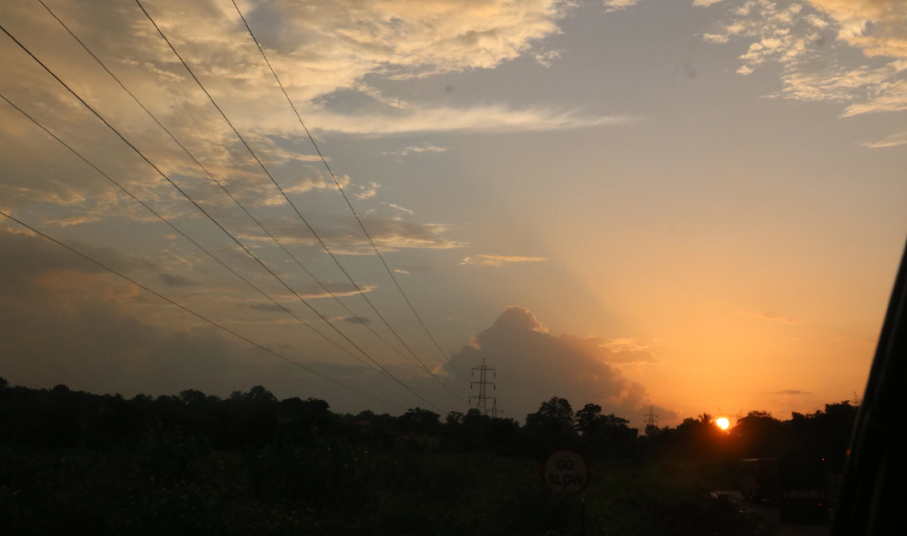
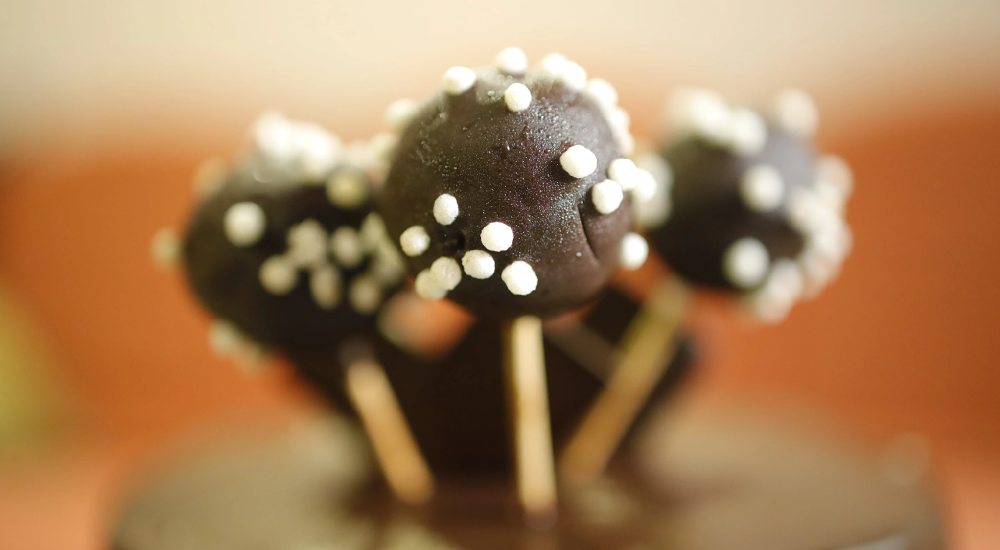
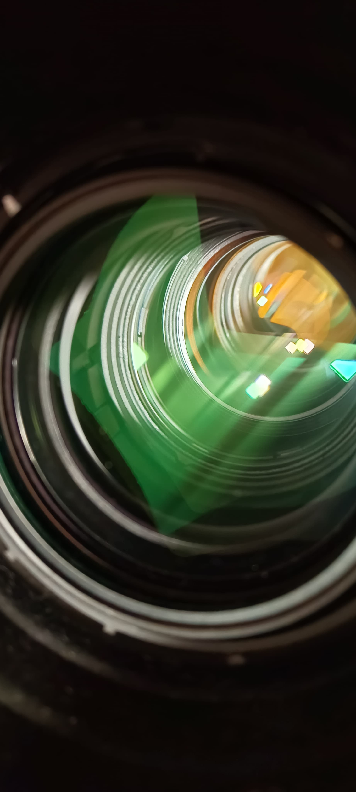

Photography
Photography is the world of stillness, where time freezes, and it can also give a powerful message. It's a different way of storytelling where you don't say anything or nothing moves. It's the art of stillness. Check out some of my works!

Path to Peace
This is a shot from Mahalshej Ghat mountain range, during monsoon. The greenery, low light and wet-empty road all of 'em contribute to this beautiful scenery in itself. I wish I would have taken the shot at the center of the road, but its fine!
- Camera: Canon EOS 760D
- Aperture: f/4.5
- Shutter Speed: 1/125
- ISO: 100

Waterfall
This shot is also taken at Mahalshej Ghat mountain range during the monsoon, when almost all of the waterfall points are full. This is basically a long exposure shot of the same, it looks so good for some reason, its just peaceful.
- Camera: Canon EOS 750D
- Aperture: f/5.6
- Shutter Speed: 1/20
- ISO: 200

Sun Forest
This shot was actually taken in nearby woods, and man, the early morning sunlight, the lighting, dried leaves laying at the ground, large FOV, the sun and the banyan tree becoming the main subject, its all cinematic and looks so cool, and peaceful!
- Camera: Realme Narzo 70 Pro (Phone)
- Aperture: Auto
- Shutter Speed: Auto
- ISO: Auto

The Sunset
This shot was during the winters and with the cold breeze with farms and vegetation around. The atmosphere was just cool and calm, the dazzling sound of the high voltage power rails just made it 10x more ASMR-y, but the colors of the sky, the clouds, the tyndall effect, it just makes the scene so calm to look at.
- Camera: Canon EOS 750D
- Aperture: f/11
- Shutter Speed: 1/160
- ISO: 200

Lolly-Jolly
This shot is of chocolate lollypop my mom made for my birthday a few years ago! The goal here was to capture a cinematic angle of the object. So I used low aperture to get that focal effect. I also used 35mm lens for this shot.
- Camera: Canon EOS R
- Aperture: f/1.8
- Shutter Speed: 1/125
- ISO: 200

The Pot
This was the pic captured during the golden hour from my balcony. The goal here was to emphasize the texture of the plastic pot. Note that this image has been processed in Darktable in which I gave some filmic grain and a slight green tint. I think it works nicely.
- Camera: Canon EOS 760D
- Aperture: f/8.4
- Shutter Speed: 1/60
- ISO: 400

Solar Flare
This shot almost looks like it was taken from space! However, what I did was to take a paper cup, taped it black, punched a small hole in the front, put my camera lens inside the other end, and pointed it towards the sun (evening sun, or else it woulve burned my sensor LOL). Then i got those really awesome sun bloom due to the aperture shape, and some sick lens flares!
- Camera: Canon EOS 760D
- Aperture: f/6
- Shutter Speed: 1/30
- ISO: 400

Lens Magic
This is a shot of a telephoto lens which is mountable for Canon R. Shined a nice white light to see the anti-glare reflective coating. Can also see various lens stages. I think this is an awesome shot depicting serious optical engineering.
- Camera: Realme Narzo 70 Pro (Phone)
- Aperture: Auto
- Shutter Speed: Auto
- ISO: Auto

Leafy Leafy
Took this shot during the golden hour when the sun is directly in front of the leaf. There was this nice hole through which the sunlight could pass. I was testing the dynamic range performance of my EOS 760D. Must say, it performed quite well considering its sensor size. The leaf veins are visible which makes them look so magical for some reason. I think this is a nice shot overall. The increased FOV and the lowered angle gives that "cinematic power" look to the sun.
- Camera: Canon EOS 760D
- Aperture: f/8.6
- Shutter Speed: 1/40
- ISO: 100

Post Apocalypse
This shot doesn't have any meaning, and is rather just for testing the performance of my EOS 760D. While its not a monster cinema camera or something, it still has got a lot of power! On an artisitc side, this creates nice silhouette elements. Plus, it almost gives out some post-apocalyptic-cinematic feel. On the technical side, notice how the highlights roll off almost like butter. The sun, instead of just clipping to white, has that gentle gradient around it. The wires around are also almost visible elevating the mood of the scene. By the way, this was also taken during the golden hour. (also had to take care that the exposure time and aperture were as small as possibe, or rip sensor.)
- Camera: Canon EOS 760D)
- Aperture: f/10
- Shutter Speed: 1/2500
- ISO: 100